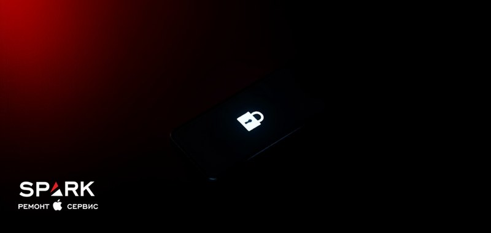
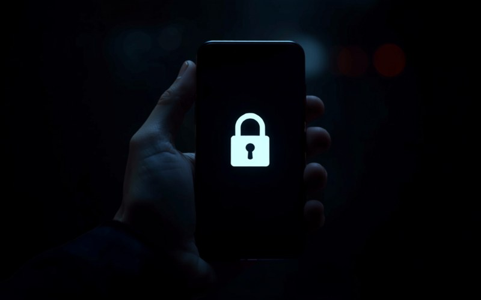

Activation Lock (замок активации iCloud): что это и как снять законно в Одессе

Вы включили только что купленный б/у айфон или сбросили свой до заводских настроек — и вместо привычного «Привет» устройство требует ввести Apple ID, который вы видите впервые. Это не поломка и не глюк: сработал Activation Lock, замок активации iCloud. Он намеренно так устроен — чтобы вором нельзя было воспользоваться чужим iPhone. В этой статье честно разберём, что это за замок, когда он всплывает, в каких случаях его можно снять законно и что делать, если привязка оказалась чужой. Сразу оговоримся: если у вас на экране надпись «iPhone недоступен» и устройство просит код-пароль разблокировки — это совсем другая проблема, забытый код-пароль экрана, а не Activation Lock. Мы поможем разобраться с обоими, но пути решения у них разные.
- Activation Lock — это привязка устройства к Apple ID через «Локатор» (Find My). После сброса или покупки б/у аппарат просит именно тот Apple ID, к которому был привязан.
- Это НЕ то же самое, что забытый код-пароль экрана и надпись «iPhone недоступен» — там блокируется вход, а не активация. Это два разных замка.
- Снять замок законно можно только при подтверждении права собственности: свой аппарат и свой (пусть забытый) Apple ID, либо б/у с чеком, либо наследство/подарок с доступом к подтверждению.
- Устройства без подтверждения права собственности и числящиеся в розыске/краденые мы не разблокируем — можем лишь проверить статус и подсказать законный путь.
- Проверяйте привязку к iCloud ДО покупки б/у: пусть продавец при вас выйдет из аккаунта и выключит «Найти iPhone». Это спасает от покупки «кирпича».
Что такое Activation Lock и чем он отличается от «забыл пароль»
Activation Lock (замок активации) — это защитный механизм Apple, который автоматически включается, как только вы активируете функцию «Локатор» («Найти iPhone», Find My) и входите в свой Apple ID. С этого момента устройство жёстко связано с вашей учётной записью. Даже полный сброс до заводских настроек не разрывает эту связь: при первой же активации аппарат обращается к серверам Apple, проверяет, к какому Apple ID он привязан, и требует ввести пароль именно от него.
Проще говоря, замок активации отвечает на вопрос «имеет ли этот человек право включить и настроить устройство». Пароль от экрана, отпечаток или Face ID отвечают на другой вопрос — «можно ли разблокировать уже настроенный аппарат». Это принципиально разные уровни защиты, и их постоянно путают.
Не путайте два разных замка
Если после сброса или покупки устройство на экране настройки просит незнакомый Apple ID и пароль — это Activation Lock, и статья именно про него. Если же аппарат включается, показывает ваш рабочий стол, но при разблокировке пишет «iPhone недоступен» или «iPhone отключён, повторите через N минут» — это забытый код-пароль экрана, отдельная история. Мы разобрали её в соседнем материале: что делать, если iPhone пишет «недоступен» и вы забыли код-пароль. Замок активации там не участвует — это другой сценарий с другими шагами.

Когда всплывает замок активации: типичные ситуации
Замок активации даёт о себе знать в нескольких предсказуемых ситуациях. Понимание, в какой из них вы оказались, сразу подсказывает, законен ли путь к разблокировке.
- После сброса до заводских настроек — вы стёрли свой аппарат (сами или через «Стереть iPhone»), а он на этапе активации просит Apple ID, который был на нём до сброса.
- При первой настройке купленного б/у — включаете «новый» для вас телефон, а он требует учётку прежнего владельца. Классический признак того, что продавец не отвязал устройство.
- После ремонта или обмена по гарантии — если аппарат меняли или восстанавливали, при активации он снова обращается к серверам Apple и проверяет привязку.
- При попытке удалённо стереть устройство — владелец через iCloud отправил команду на стирание, и после неё аппарат «запирается» до ввода его Apple ID.
Во всех этих случаях поведение одинаковое: устройство доходит до экрана активации и упирается в запрос чужого (или собственного, но забытого) Apple ID. Это не сбой — так задумано. Apple сознательно сделала украденный или потерянный iPhone бесполезным для того, у кого нет доступа к учётной записи владельца. Для честного покупателя это защита, для вора — тупик. Проблема лишь в том, что иногда в этот тупик попадает добросовестный человек: забыл свой пароль, купил аппарат у невнимательного продавца, получил технику в наследство.
Как проверить привязку к iCloud — в том числе перед покупкой б/у
Самый надёжный способ не столкнуться с замком активации — проверить устройство ДО передачи денег. На вторичном рынке Одессы это стандарт разумной сделки, и любой честный продавец спокойно к нему отнесётся. Никаких «секретных» методов здесь нет — только открытая проверка при владельце.
Что сделать при осмотре б/у устройства
- Попросите продавца выйти из iCloud при вас: «Настройки» → имя учётной записи → «Выйти». Если для выхода требуется пароль Apple ID — пусть введёт его сам, на ваших глазах.
- Убедитесь, что «Найти iPhone» / «Локатор» выключен — это видно в том же разделе настроек. При активной функции замок никуда не денется.
- Идеальный вариант — сброс до заводских при вас и настройка «с нуля» до появления рабочего стола без запроса чужого Apple ID. Если аппарат дошёл до домашнего экрана и ничего не просит — привязки нет.
- Проверьте, что телефон не в режиме пропажи и не заблокирован сообщением с чужими контактами.
- Спросите чек или подтверждение первичной покупки. Для дорогих моделей это норма, а не придирка.
Если вы уже купили устройство и обнаружили привязку — не паникуйте, но и не тяните. Самый быстрый и правильный шаг — связаться с продавцом и попросить удалить аппарат из своего iCloud удалённо (как это делается законно — в разделе ниже). Если связи нет, а у вас на руках есть чек или иное подтверждение покупки, приходите к нам: мы бесплатно проверим статус устройства и честно скажем, есть ли законный путь к разблокировке iCloud и Apple ID.
Законные случаи, когда замок можно снять
Замок активации снимается законно только тогда, когда есть подтверждение права собственности. Это ключевое условие, и оно неслучайно: сама суть механизма — не дать воспользоваться чужим устройством. Легальных сценариев ровно три.
- Ваш собственный аппарат, но вы забыли свой Apple ID или пароль. Устройство ваше, учётная запись ваша — просто утерян доступ. Это самая частая и самая простая ситуация: восстановление идёт через Apple по стандартной процедуре.
- Б/у устройство с чужой привязкой, но у вас есть чек или подтверждение покупки. Вы законно приобрели аппарат, и у вас есть документ, доказывающий это. Тогда возможно обращение в Apple с подтверждением права собственности.
- Наследство или подарок с доступом к подтверждению. Устройство перешло к вам от родственника или было подарено, и вы можете подтвердить и факт передачи, и первичную покупку. Здесь путь тоже идёт через официальные каналы Apple.
Во всех трёх случаях объединяющий момент — вы можете доказать, что имеете право на устройство. Если такого подтверждения нет, честный путь закрыт, и никакой сервис не должен обещать обратное. Это не бюрократия ради бюрократии, а защита реальных владельцев от кражи.
Чего мы НЕ делаем: наша красная линия
У нас есть услуга разблокировки iCloud, и мы оказываем её законно. Но именно потому, что она законная, у неё есть чёткие границы. Скажем прямо, чтобы не тратить ваше и наше время.
Мы НЕ беремся, если:
- нет подтверждения права собственности — ни чека, ни доступа к прежнему владельцу, ни иного доказательства, что устройство ваше;
- устройство числится в розыске, потеряно или краденое — такие аппараты мы не разблокируем ни при каких условиях;
- предлагают «серые» IMEI-разлочки сомнительного происхождения, чит-сервисы и «универсальные» способы снять защиту Apple в обход владельца — это не наши методы.
Что мы делаем:
- бесплатно проверяем статус устройства и объясняем, с каким замком вы столкнулись;
- помогаем честному владельцу собрать нужные документы (чек, подтверждение покупки, данные учётной записи);
- оформляем и сопровождаем законное обращение к Apple, когда право собственности подтверждено.
Наша задача — помочь честному человеку вернуть доступ к своему устройству и отсечь того, кто пытается легализовать чужое. Это не только вопрос закона, но и вопрос доверия: сервис, который «снимает всё подряд», рано или поздно помогает ворам. Мы лучше откажем в сомнительном случае, чем поможем легализовать краденое, — и честному владельцу от этого только спокойнее: рядом с ним нет схем, за которые потом придётся отвечать. Мы так не работаем — и именно поэтому нам можно доверять свою технику.
Как снять замок законно: три рабочих пути
Законных маршрутов снятия замка активации — три. Ни один из них не снимает защиту Apple тайно или в обход владельца: все идут через самого владельца или через официальную поддержку Apple с подтверждением покупки. Роль сервиса здесь — проверить, подсказать и грамотно оформить обращение, а не «взломать».
Путь 1. Сам владелец восстанавливает доступ к Apple ID
Если устройство ваше, но вы забыли пароль или сам Apple ID, начните с официального восстановления учётной записи на iforgot.apple.com или через поддержку Apple. Если под рукой есть доверенное устройство, привязанный номер телефона или подтверждение покупки, доступ обычно удаётся вернуть — и тогда замок активации снимается сам собой, ведь вы вводите правильный Apple ID. Если же доверенных устройств и номера нет, Apple запускает процедуру восстановления доступа (Account Recovery): она требует дополнительной проверки и может занять несколько дней. Гарантировать результат заранее нельзя — многое зависит от того, что именно вы можете подтвердить.
Путь 2. Прежний владелец отвязывает устройство удалённо
Если вы купили б/у аппарат с привязкой, самое быстрое решение — попросить продавца удалить устройство из своего iCloud. Он делает это удалённо: заходит на iCloud.com или appleid.apple.com в раздел «Найти iPhone» / список устройств, выбирает нужный аппарат и удаляет его из учётной записи. После этого замок активации на вашем устройстве снимается. Это законно, бесплатно и занимает пару минут — если продавец добросовестный.
Путь 3. Обращение в Apple с подтверждением покупки
Когда связаться с прежним владельцем невозможно, но у вас есть чек или иное подтверждение первичной покупки, остаётся официальное обращение в Apple. Компания рассматривает proof of purchase и, если право собственности подтверждено, помогает снять привязку. Путь не самый быстрый, требует корректно оформленных документов — и именно здесь пригодится помощь сервиса.
Во всех трёх сценариях мы можем взять на себя рутину: проверить привязку, помочь собрать документы, корректно оформить обращение и довести разблокировку iCloud до результата — в рамках закона и без «серых» схем.
Сколько стоит и сроки: разблокировка iCloud в SPARK
Честно о цене: единой суммы «за снятие замка» не существует, и любой, кто называет её не глядя на устройство, лукавит. Стоимость и сроки зависят от нескольких факторов:
- модель и год устройства — разные поколения и разные сценарии активации;
- какой именно законный путь применим в вашем случае (восстановление своей учётки, отвязка прежним владельцем, обращение в Apple);
- наличие и полнота документов — чек, подтверждение покупки, доступ к прежнему владельцу.
- текущий статус устройства, который мы проверяем на диагностике.
Поэтому мы сначала бесплатно смотрим устройство, определяем законный путь и только потом называем стоимость и сроки — без предоплаты и без обещаний того, что сделать нельзя. Актуальные условия и запись удобнее смотреть на странице услуги: узнать стоимость и сроки разблокировки iCloud.
MDM и корпоративная блокировка — это не Activation Lock
Есть третий замок, который часто путают с iCloud-привязкой, — MDM-блокировка (Mobile Device Management). Это управление устройством со стороны организации: компании, учебного заведения, госструктуры. Такие устройства при настройке показывают экран «Настройка удалённого управления» или сообщение о том, что аппаратом управляет организация.
Ключевое отличие от Activation Lock: MDM-замок ставит не Apple ID частного лица, а корпоративная система управления. Соответственно, и снять его может только сама организация-владелец через свой MDM-профиль — это её устройство, её правила. Ни Apple, ни сторонний сервис не должны обходить корпоративное управление: за таким аппаратом стоит юрлицо, которое его закупило.
Если вы столкнулись с MDM-экраном на купленном б/у устройстве — это сигнал, что аппарат корпоративный и мог быть продан без снятия с управления. Правильный путь один: обратиться в организацию, которой принадлежит устройство, чтобы она удалила его из своего MDM. Снимать MDM-блокировку в обход организации мы не беремся — как и снимать замок активации без подтверждения права собственности.
Коротко о главном
Activation Lock — это не поломка, а защита: устройство привязано к Apple ID через «Локатор», и после сброса или покупки б/у просит именно эту учётную запись. Снять замок законно можно только при подтверждении права собственности — свой забытый Apple ID, чек на б/у или доступ к прежнему владельцу; краденое и аппараты без подтверждения мы не разблокируем. Проверяйте привязку к iCloud до покупки б/у, а если добросовестно попали в тупик — приходите на бесплатную проверку статуса: подскажем законный путь и поможем оформить разблокировку.
Столкнулись с замком активации iCloud?
Принесите устройство в SPARK на бесплатную проверку статуса. Определим, с каким замком вы имеете дело, подскажем законный путь и честно предупредим, если разблокировка невозможна. Без предоплаты.
Проверить и разблокировать iCloudКакая у вас модель iPhone?
Проголосуйте — узнайте, что приносят чаще всего, и цену ремонта вашей модели.